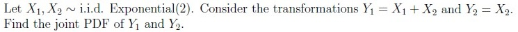
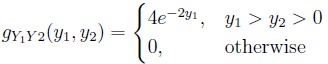
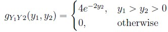
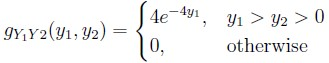
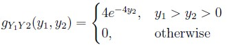

Home / Past papers / MLF End Term / this paper
IIT M DIPLOMA ET1 EXAM QPD1 S1 03 Sep - 03 Sep 2023


- Useful Data has been mentioned above.
- This data attachment is just for a reference & not for an evaluation.
- In classification, the output variable is continuous and real-valued, while inregression, it is categorical.
- Regression models are used for predicting probabilities, whereas classificationmodels focus on predicting absolute values.
- Classification models aim to find decision boundaries to separate data intoclasses, while regression models seek to predict a numeric value.
- In regression, the commonly used loss function is mean squared error, whilein classification, 0 -1 loss is typically employed.


- b1 − b2 + b3 = 0
- b1 + b2 + b3 = 0
- 2b1 − b2 + b3 = 0
- 2b1 + b2 + b3 = 0


- A − I (where I is the identity matrix of the same size) is also orthogonal.
- Both AB and BA are orthogonal.
- An and Bn are orthogonal for every n > 1.
- A and B are also symmetric matrices.
- AT A and AAT have the same rank.
- AT A and AAT have the same eigenvalues
- AT A and AAT have the same eigenvectors.
- AT A and AAT have the same singular values.


- The first principal component represents the direction along which thevariance of the dataset is maximized.
- The first principal component represents the direction along which thevariance of the dataset is minimized.
- The first principal component is the eigenvector corresponding to the smallesteigenvalue of the covariance matrix.
- The first principal component is the eigenvector corresponding to the largesteigenvalue of the covariance matrix.
- If the step size is chosen as 1, we may “not always” arrive as close to theoptimal solution even after many number of iterations.
- Solution obtained for optimization problem is the local minimum of itsobjective function.
- Solution obtained for optimization problem is the global minimum of itsobjective function.
- Gradient descent converges to the global optimum in the case of convexfunctions.
- Gradient descent does not converge to the global optimum in the case ofconvex functions.
- A, B and C are independent.
- A, B and C are dependent.
- A, B and C are pairwise independent.
- P(A) = P(B) = P(C) = 1/2







Answer key
- Q1 (MCQ, 0 marks): A
- Q2 (MSQ, 2 marks): C, D
- Q3 (SA, 2 marks): 0
- Q4 (SA, 1 marks): 7.44 to 7.52
- Q5 (MCQ, 3 marks): C
- Q6 (MCQ, 3 marks): A
- Q7 (MSQ, 4 marks): B, C
- Q8 (MSQ, 4 marks): A, B, D
- Q9 (MSQ, 3 marks): A, D
- Q10 (MSQ, 3 marks): A, D
- Q11 (MSQ, 3 marks): A, B, D
- Q12 (MSQ, 3 marks): B, C, D
- Q13 (SA, 2 marks): 225
- Q14 (SA, 3 marks): 1
- Q15 (SA, 3 marks): 40
- Q16 (SA, 3 marks): 0.870 to 0.880
- Q17 (MCQ, 4 marks): C
- Q18 (MCQ, 4 marks): A
Concepts this paper tests
Auto-generated summary from the source site. Handy as a checklist; the lessons above explain each idea from scratch.
Here’s a structured summary of the core topics, concepts, principles, and equations essential for the Diploma Level: Machine Learning Foundations (Computer-Based Exam). The exam covers probability, linear algebra, optimization, and machine learning fundamentals.
1. Probability & Statistics
Core Topics:
Discrete & Continuous Random Variables
- PMF, PDF, CDF, Expectation, Variance.
- Key distributions: Uniform, Bernoulli, Binomial, Geometric, Poisson, Exponential, Normal, Gamma, Beta.
Inequalities & Theorems
- Markov’s Inequality:
- Chebyshev’s Inequality:
- Weak Law of Large Numbers (WLLN):
- Central Limit Theorem (CLT):
Maximum Likelihood Estimation (MLE)
- Likelihood function:
- MLE:
Independence & Conditional Probability
- Pairwise independence vs. mutual independence.
- Joint PDF/CDF for transformed random variables.
Key Equations:
| Concept | Equation |
|---|---|
| Markov’s Inequality | |
| Chebyshev’s Inequality | |
| WLLN | |
| CLT | |
| MLE | |
| Exponential PDF | |
| Normal PDF |
2. Linear Algebra
Core Topics:
Matrix Properties
- Orthogonal matrices: .
- Symmetric matrices: .
- Unitary matrices: (complex analog of orthogonal).
- Hermitian matrices: .
Rank & Eigenvalues
- and share singular values.
- and have the same non-zero eigenvalues.
Systems of Linear Equations
- Condition for solvability: .
Principal Component Analysis (PCA)
- First PC: Eigenvector of the largest eigenvalue of the covariance matrix.
- Maximizes variance in the data.
Key Equations:
| Concept | Equation |
|---|---|
| Orthogonal Matrix | |
| Eigenvalue Equation | |
| SVD | |
| PCA Variance | (largest eigenvalue of ) |
| Rank Condition | has a solution iff |
3. Optimization
Core Topics:
Gradient Descent
- Update rule: .
- Convergence: Guaranteed for convex functions (global optimum).
- Step size () affects convergence.
Karush-Kuhn-Tucker (KKT) Conditions
- Necessary for optimality in constrained optimization.
- Complementary slackness: .
Lagrange Multipliers
- Used for equality constraints.
Key Equations:
| Concept | Equation |
|---|---|
| Gradient Descent | |
| KKT Conditions | |
| Lagrangian |
4. Machine Learning Fundamentals
Core Topics:
Classification vs. Regression
Classification: Predicts categorical labels (decision boundaries).
- Loss: 0-1 loss, cross-entropy.
Regression: Predicts continuous values.
- Loss: Mean Squared Error (MSE).
Probabilistic Models
- Likelihood, MLE, Bayesian inference.
Dimensionality Reduction
- PCA: Projection onto directions of maximum variance.
Key Equations:
| Concept | Equation |
|---|---|
| MSE Loss | |
| 0-1 Loss | |
| PCA Objective | s.t. |
2. Linear Algebra
3. Optimization
4. Machine Learning
Exam-Specific Tips
Probability:
- Memorize PMF/PDF/CDF for key distributions (e.g., Binomial, Poisson, Normal).
- Practice MLE problems (e.g., Q19: Exponential MLE).
- Understand WLLN/CLT for approximations (e.g., Q17: Exponential WLLN).
Linear Algebra:
- Know orthogonal matrix properties (e.g., Q8: is orthogonal).
- Rank conditions for solvability (e.g., Q6: ).
- PCA: First PC = eigenvector of the largest eigenvalue (Q11).
Optimization:
- Gradient descent updates (e.g., Q14: 2 iterations).
- KKT conditions for constrained problems (e.g., Q18: Linear constraints).
ML Fundamentals:
- Classification vs. Regression: Loss functions (Q3: MSE vs. 0-1 loss).
- PCA: Variance maximization (Q11).